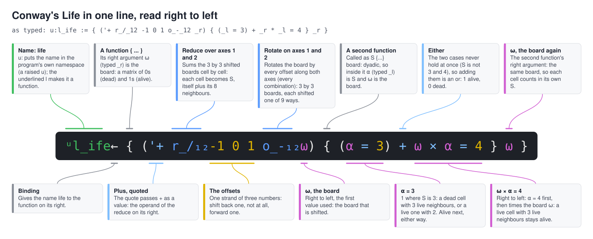

Life in one line
Conway's Game of Life in X_eTaL, built up a piece at a time
Table of Contents
Conway's Game of Life is played on a grid of cells, each alive (1) or
dead (0). At every step a cell with exactly three live neighbours is
alive next, a live cell with two live neighbours stays alive, and every
other cell is dead. In X_eTaL the whole rule is one line; this document
builds it up a piece at a time. Every block below is run by xetal
through ob-xetal, and its result recorded under it.

A board
A blinker: three live cells in a row, in the middle of a 5 by 5 board.
r_eshape lays its right argument out in the shape on its left.
blinker := 5 5 r_eshape 0 0 0 0 0 0 0 1 0 0 0 0 1 0 0 0 0 1 0 0 0 0 0 0 0 blinker
0 0 0 0 0 0 0 1 0 0 0 0 1 0 0 0 0 1 0 0 0 0 0 0 0
Neighbours by rotation
o_- rotates: 1 o_-_2 b shifts every row of b one place along
axis 2, wrapping round the edge. With the offsets -1 0 1 on both
axes (_12) it gives nine boards, the board shifted each way: its
shape is a 3 by 3 grid of 5 by 5 boards.
s_hape -1 0 1 o_-_12 blinker
3 3 5 5
Counting
Summing the nine boards over their first two axes, '+ r_/_12, gives
each cell's count of itself and its neighbours:
'+ r_/_12 -1 0 1 o_-_12 blinker
0 1 1 1 0 0 2 2 2 0 0 3 3 3 0 0 2 2 2 0 0 1 1 1 0
The rule
With S that count, a cell lives next when S is 3 (three
neighbours, or a live cell with two), or when it is alive and S is 4
(a live cell with three): (S = 3) + board * S = 4. Written as an
inner function applied to S on its left and the board on its right,
that is the whole of Life:
u:l_ife := { ('+ r_/_12 -1 0 1 o_-_12 _r) { (_l = 3) + _r * _l = 4 } _r }
u:l_ife blinker
0 0 0 0 0 0 0 0 0 0 0 1 1 1 0 0 0 0 0 0 0 0 0 0 0
The blinker turned upright. A superscript on a function repeats it, so
u:l_ife^2 is two steps, which brings the blinker back (m_atch
gives 1 when two arrays are the same):
(u:l_ife^2 blinker) m_atch blinker
1
A glider
A glider moves one cell diagonally every four generations:
glider := 6 6 r_eshape 0 1 0 0 0 0 0 0 1 0 0 0 1 1 1 0 0 0 0 0 0 0 0 0 0 0 0 0 0 0 0 0 0 0 0 0 u:l_ife^4 glider
0 0 0 0 0 0 0 0 1 0 0 0 0 0 0 1 0 0 0 1 1 1 0 0 0 0 0 0 0 0 0 0 0 0 0 0
Shifting the glider one row down and one column right gives the same board (rotating by -1 moves the rows down and the columns right):
(u:l_ife^4 glider) m_atch -1 o_-_2 -1 o_-_1 glider
1